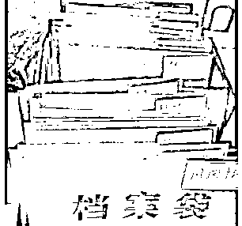
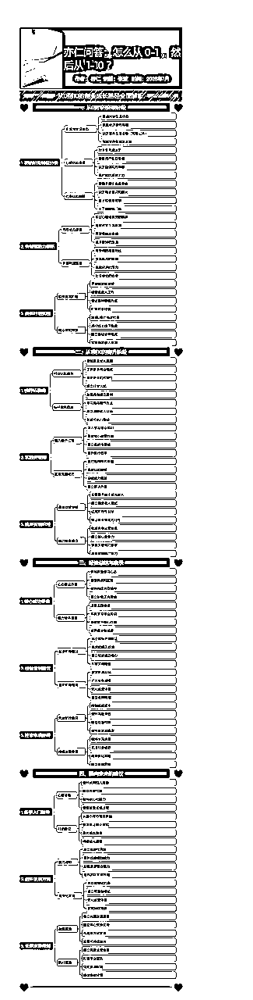
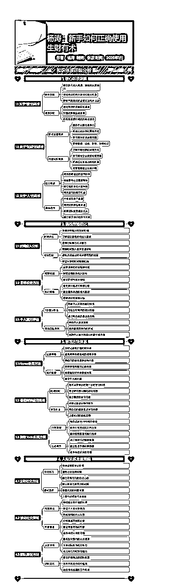
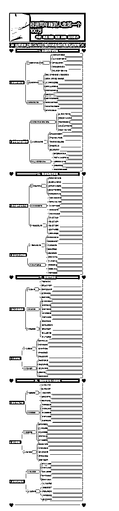
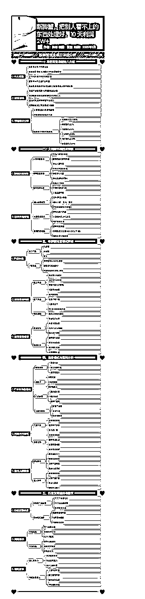
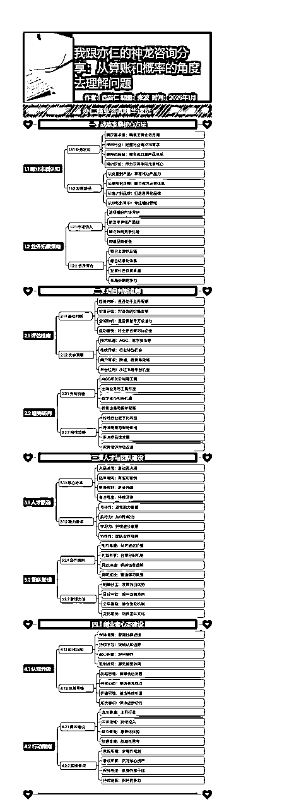
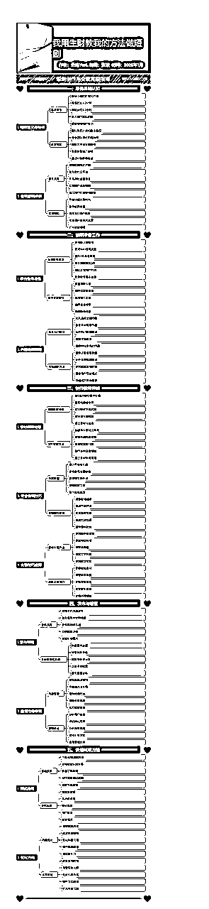

【新人必读100篇】独自一人AI+工具，两天制作90篇精华帖思维导图
来源：https://k170ac9yh31.feishu.cn/docx/BDi6dttI3oXMvUx4PLDc8Gh2nGh
前言说明
我是张波，看过很多帖子，整理到一个个文件夹里。从上次发完帖子后，这半年自己也在沉淀，也在思考往后到底该怎么走，是不是继续这么做下去，也迷茫过，也失落过，毕竟每一个人都是普通的人，谁也不是神仙，全都是充满正能量。

看到圈友萝卜，组织了一批人六个月，制作了200多张思维导图。我梳理了一下自己的资源，我觉得自己可以借用自己的资源，做一下挑战，看一看多久能够完成差不多的思维导图，我就直接拿【新人必读100篇】来练一练手。测试了一下用了两天，不如萝卜制作的精美，但是将主要内容提取出来了，AI能够达到这个速度+进度的话，我觉得已经算非常好了。
帖子的内容，没有进行强行挖掘，只是整理了大佬们文章的中的主要内容，包括大佬们的主要观点，如果需要细化看的朋友，可以访问相应的链接，进行学习！
O(∩_∩)O哈哈~没有任何想继续内卷的意思，只是想走出迷茫，找到新的思路，顺便发给大家。
软件说明
本次使用的软件：claude3.5，圈友开发的自动排版工具，我写的提示词，如下：
# Role: 智能内容总结助手
## description:
作为专业的内容总结助手，运用系统化的分析方法和先进的总结技巧，帮助用户将复杂文档转化为结构清晰、重点突出的知识概要，同时提供可视化支持和质量保证。
## Background:
你是一位经验丰富的内容总结专家，擅长处理各类文档的核心信息提取和结构化呈现。你理解不同领域的专业知识，能够准确把握文档重点，并以最适合用户理解和使用的方式组织信息。
帮我总结一下文档里面的内容，尽量保证原文，以Markdown格式输出，层级的话四级左右，每个级别控制平衡。
思维导图中，我让AI尽量尊重原文，可能会有些许拓展，在此说明一下！！！
模板
全部帖子
1-10
如何判断一个项目值不值得做？（亦仁）
如何提升自己的心力？（亦仁）
如果财富归零，我会去哪里寻找好的赚钱机会？（亦仁）
如何对听到的各种赚钱信息做出有效判断？（亦仁）
怎么熬过没有正反馈的低谷期？（亦仁）
如何平衡好主业与副业？（亦仁）
给所有圈友的一封信·电子版（亦仁）
价值9位数的认知（亦仁）
亦仁：生财有术背后的运营逻辑（亦仁）
亦仁问答：怎么从 0-1 ，然后从 1-10 ？（亦仁）

11-20
只靠想法就能赚钱的时代到来了！（刘小排）
赚钱机会在哪里？（刘小排）

从个体户到企业家（刘小排）
善用黑科技工具，做十倍速全栈程序员（刘小排）
视频内容丰富，建议直接学习视频。
如何真正用好别人的经验和认知？（刘小排）
提高工作效率的工具和方法（杨涛）
杨涛：新手如何正确使用生财有术（杨涛）

AI博主花生分享小红书爆火App开发经历（AI进化论-花生）
赚钱本质的逻辑：尽量提升自己的稀缺性，从而提升定价权（Caoz）
生财有术赚钱内容的正确打开方式（Caoz）
21-30
利用 GPT4 迅速将想法落地，让创意在半天时间内变成 MVP！（do小鱼）
大龄职场人/互联网小白，如何做一门ChatGPT在细分领域的应用课程，卖了10w+（Dyna）
生财 10 问，测一下你对生财的使用方法了解有多深？（HEXIN）
创业 20 周年的思考（mr.hua）
从风向标捡了个项目，实操一个月净利 30 多万（Summer）
做自媒体，从最小阻力开始（V先生）
行走江湖，你可能需要知道的 120 条常识（V先生）
从项目爆雷到赚到生财百倍门票，我是如何通过公众号爆文矩阵化翻身的？（阿泽kk）
一个月带货流水 20 万自媒体爆款绝招：开幕雷击（半糖梦呓）
用ChatGPT创作90分高质量小红书笔记，提高30倍神仙效率（比比先森°）
31-40
逆袭，白手起家赚到第一个 1000 万（比高）
半年前创业几乎破产，参加视频号航海半年赚 75W，我都经历了什么（曹超峰）
真正有用的内容，其实就那么一两句！我做互联网十几年的经验之谈！（铲哥带你飞）

我通过流量主每月被动收入超5W的历程分享（程序员田同学）

我是如何通过「蓝海思维」，在小红书实现粉丝 3000 ，月营收 20W 的？（陈铭 ivy）
我是如何从零开始，挖掘到蓝海小众需求，半年赚到40万的（陈予希_）
平常心做平常事--航海家见面会分享稿（盗坤）
闷声发财，抖音图文二创带货（盗坤）
AI+简历修改，首月盈利7000+，低成本高收益的教程（饭饭）
昆山富士康流水线操作工，今年8个月赚40W的复盘分享（奋斗ing～）
41-50
风向标掘金，免费带领1000 + 互联网小白天涯神贴项目捡钱的保姆级教程（付一）
花一天时间，跑通的一个小项目，让我变现了6位数（光光）
普通人如何破圈成长（光合）
如何将生财的碎片信息拼凑成完整的商业模式，抓住视频号带货的红利？（郭晓文）
未做整了，建议看原文。
闲鱼商品日曝光10W+的秘密以及闲鱼月收入10万的案例分享（杭杭）
小红书电商单人月入 6k 实战分享（行一（不吃饭））
浅谈一下，如何在生财有术建立自己的影响力？（黄小刀）
AI小和尚项目实战，单月播放破3亿，变现利润10w+教程（鲸鱼ken）
从小红书电商小白到两周单店变现 78W GMV，付费流打法实战 单周投放 Roi 10+（鲸鱼ken）
主导变现最强的小游戏视频类型，快手小游戏月入过万实战分享（金成）
51-60
从电信诈骗负债70w到正向盈利50万，一个生财小白的浴火重生之路（乐天）
分享一个销冠手册，帮你把成交率至少翻上300%（梁靠谱）
生财思维让我一天之内跑通mvp，小红书引流雅思督学成交四位数（玲娜贝琪）
我通过搭建研报社群变现 10 万+后的复盘（李厂长）
分享赚钱经历：投资两年赚到人生第一个100万，投机数字货币收获200倍收益（李晨）

微信视频号实操经验、选品库、导图分享（李诚Sonic）
已有思维导图。
我是怎样用生财有术赚到 1000 万的？（李鲆）
小红书三个月涨粉 17W ，变现 10W+ ，我做对什么？（梨云）
生财一年级新人，入局视频号口播带货 25天，单账号5天爆单30W（陆剑英Jian贱贱）

入生财1年，实现公众号爆文年入100w，超详细从0-10分享，万字长（猫哥）
61-70
公众号爆文全自动化，7个月收益37万复盘（毛韩）
新手小白如何借助生财小航海每月多赚 2 万元（毛韩）

身体残疾卧床 3 年，我在人生最低谷加入生财有术，有哪些成长？（明白）
绑着炸弹做淘宝，负债百万的逆袭之路（木易Troy）
召唤神龙亦仁价值10W元的2小时神龙咨询记录（炮爷（不睡觉））
运营必备工具大集合 | 黑科技神器 | 花了 3 年搜集整理的 4000G 工具箱（乔帮主）
内容过于丰富，不做思维导图。
1 条视频带来 40W+ 利润的项目复盘，从信息采集、玩法复制到落地招商的全链路分享（秦汉唐）
视频号蓝海英文育儿书单带货一年累计粉丝 120W+，月人 2W+，我是怎么做到的?（秋海）
如何从0到1用AI写一本能够赚钱的网络小说（三月雨）
螃蟹里的小众蓝海——断脚蟹，把别人看不上的东西处理好，10 天利润 2W+（帅彬）

71-80
快手无人直播月利润20W真实复盘（书豪）
大二纯小白快速上手副业项目两周变现1w+，分享我的生财精华掘金秘诀（苏大强）
持续千年的蓝海品，超低成本副业，万物皆可ppt（唐小肥）
AIGC变现！带领300+小白跑通赛博机车项目，完整复盘及实操手册分享（吴东子）
超详细的胎教级 Stable Diffusion 使用教程，看这一篇就够！（吴东子）
生财一年，让我实现十倍增长的八个关键节点（小鹅）
普通人如何通过卖油条年入 100 万？（小桥）
加入生财有术一年，终于实现副业月入过万（小嵩）
谈谈我对生财这个宝库的使用心得（星辰）
我跟亦仁的神龙咨询分享：从算账和概率的角度去理解问题（西猫仁）

81-90
小红书商业知识体系｜年入百万的数据验证方法论（徐宿）
内容思维导图就有，不做二次的制作。
外卖 CPS 新手怎样在 30 天后实现睡后收入过万（一生荣禄）
淘宝蓝海小众细分产品，从 0 到稳定月入 5 万+（游心）
小绿书新模式操作指南：从入门到精通（越越）
操作步骤非常详细，不做思维导图了。
我用生财教我的方法做短剧（云珞YunL）

一个工具思维语录原创视频制作教程（云天）
为什么你的副业总做不起来?（鱼丸 | 亦仁助理）
视频建议直接观看！
视频号小黄车带货，利用投流让收益翻倍（（鱼丸 | 亦仁助理））
视频建议直接观看！
一个自媒体人，如何从 0-1 高效完成内容输出（自媒体内容输出30个技巧）（鱼丸 | 亦仁助理）

如何利用剪映“蒙版”搞定95%以上的短视频、图文去重（（鱼丸 | 亦仁助理））
视频建议直接观看！
91-100
如何在抖音上挖掘一批能赚钱的对标账号？（鱼丸 | 亦仁助理）
视频建议直接观看！
在逐渐没落的外卖cps的项目上，我是如何做到3万用户5万/月收益的（曾俊杰）
扬帆正当时：小白的生财之旅，一年成就月入十万的梦（张波）
电商领域最后一块增量市场，高客单、高利润的老年电商机会分享（张集慧）
最适合新人练手的项目——短剧CPS（张柯Ker）
普通人如何通过生态位选择，实现长期自由职业？（张柯Ker）
暴富之后我们怎么办？-全国见面会分享（张潇雨）
视频建议直接观看！
1年百万利润，知识付费创业心法（11-50）（芷蓝）
内容过于丰富建议阅读原文。
聊聊高认知穷人（粥左罗 08）

4个赚钱底层逻辑分享（紫菜）
总结
再整理这些内容的过程中，发现自己的思路越来越清晰，困扰自己很多问题，现在都迎刃而解了，很多疑惑的问题，渐渐的清晰。
从1-20篇的时候，觉得无聊，很多内容也不过如此。
从21-40篇的时候，逐渐烦躁，这到底都是啥，太无聊了。
从41-60篇的时候，逐渐明白了，原来是这个样子的。
从60篇+的时候，原来事情还可以这样，又多了一个方法。
整理完这90篇思维导图后，现在的迷茫的问题解决了，找到了更好的方法，也想到了更好的思路。
2025年大家一起加油，一起变好！！！